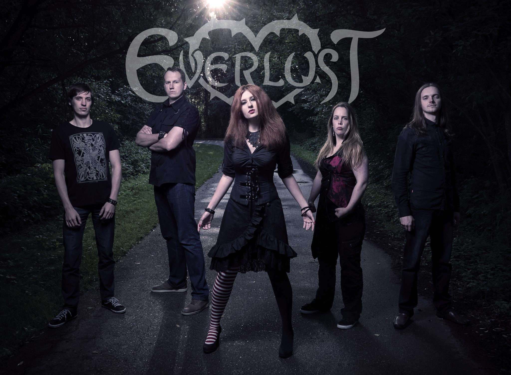

|  | EVERLUST is a gothic rock / melodic metal band from Riga, Latvia, founded in 2014. Their music can be described as melancholic and romantic. They sing about love, passion, heartbreak, misery, death. Besides, they are the only active gothic band left in the Baltic region at the moment, with strong influence from bands like “Draconian”, “Theatre of Tragedy”, “Charon”, “Paradise Lost”, “Sentenced”, “Lacuna Coil”, “Trees Of Eternity” and more. Here is links on some music video with me on vocals: |
|---|---|
| Woman in white | |
| Undead | |
| Back to main page | |